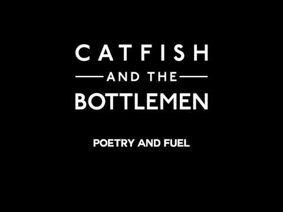
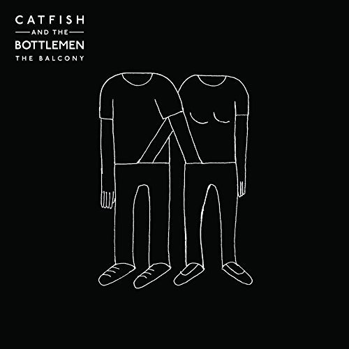
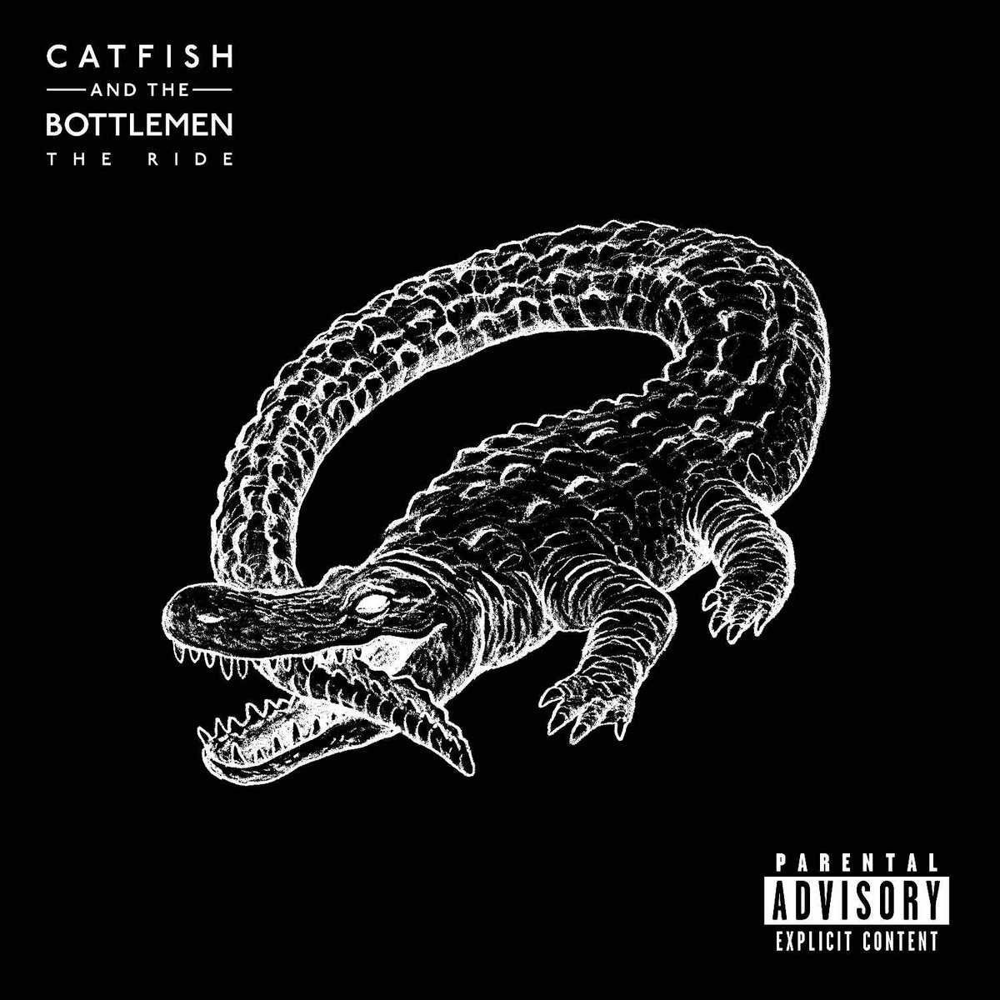

Catfish and the Bottlemen are a British rock band, formed in Llandudno, Wales in 2007. Their debut album, The Balcony, reached number 10 in the UK Albums Chart and achieved Platinum status on 30 December 2016. The band have toured in the UK, Europe, North America, and Australia and have featured in a number of festivals including Glastonbury, Latitude, Reading and Leeds, T in the Park, Governors Ball, and Bonnaroo. They won their first Brit Award for British Breakthrough act on 24 February 2016. On 27 May 2016, they released their second album, The Ride.
POETRY AND FUEL

THE BALCONY

THE RIDE
